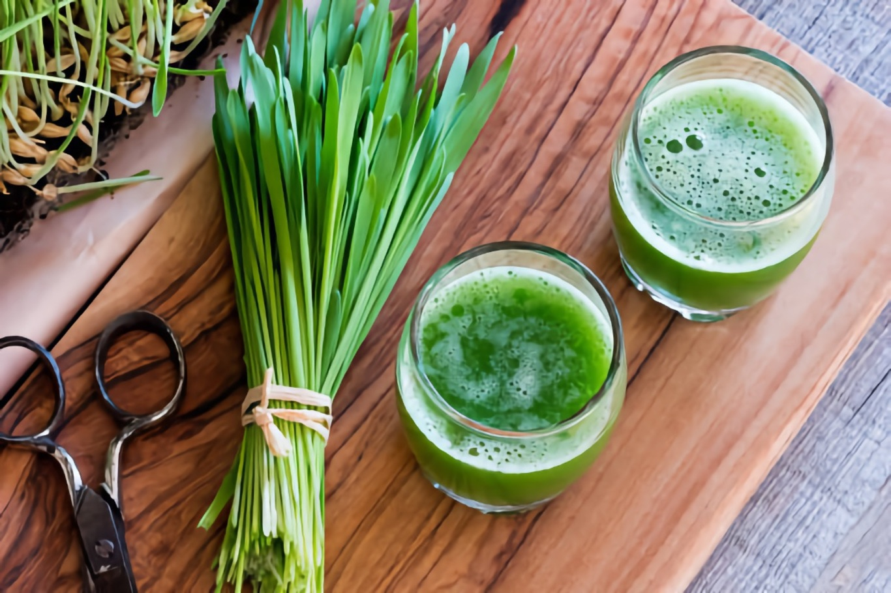

Wheatgrass Recipes
Energize your body with these fresh wheatgrass drinks and smoothies! 💚
1. Basic Wheatgrass Shot
Ingredients
- 1 oz fresh wheatgrass (or about a handful)
- 1 cup of water (for blending)
- Small piece of ginger (Optional)
- 1 tsp honey or jaggery powder (Optional)
- Pinch of salt
Instructions
- Juice the wheatgrass using a juicer. If using a blender, add water and blend, then strain.
- Drink immediately as a shot for maximum nutrients.
- Consume within 15–30 minutes to preserve freshness and benefits.
2. Wheatgrass Lemon Detox
Ingredients
- 1 oz wheatgrass juice
- 1/2 lemon, juiced
- 1/2 cup water or coconut water
- 1 tsp honey, maple syrup, or jaggery (Optional)
Instructions
- Combine all ingredients in a glass or shaker bottle.
- Stir or shake well. Serve chilled.
3. Green Power Juice
Ingredients
- 1 oz wheatgrass
- 1 green apple
- 1/2 cucumber
- 1/2 lemon
- Small piece of ginger
Instructions
- Juice all ingredients using a juicer.
- Stir and enjoy cold.
4. Wheatgrass Mango Smoothie
Ingredients
- 1 oz wheatgrass juice
- 1/2 cup mango chunks (fresh or frozen)
- 1/2 banana
- 1/2 cup almond milk (or any milk)
- Ice cubes
Instructions
- Blend all ingredients until smooth.
- Serve immediately.
5. Tropical Wheatgrass Juice
Ingredients
- 1 oz wheatgrass juice
- 1/2 cup pineapple juice
- 1/4 cup orange juice
- Splash of lime juice
Instructions
- Mix all juices in a shaker or blender.
- Serve chilled over ice.
6. Banana Citrus Wheatgrass Smoothie
Ingredients
- 1 oz wheatgrass juice
- 1 banana
- Juice of 1 orange
- 1/2 cup water or almond milk
- Ice (optional)
Instructions
- Blend all ingredients until creamy.
- Serve immediately for a nutrient-rich breakfast or snack.